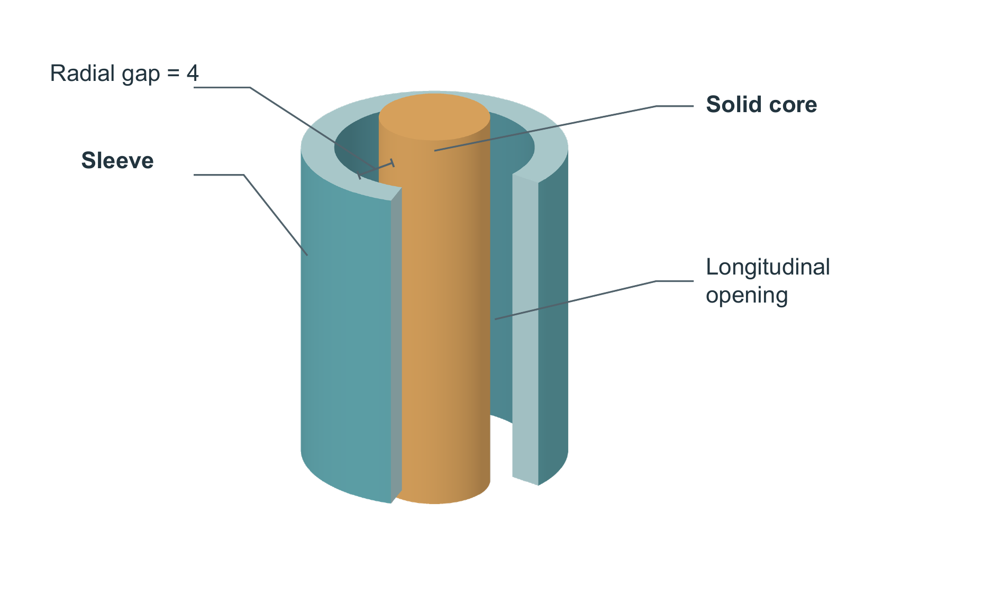
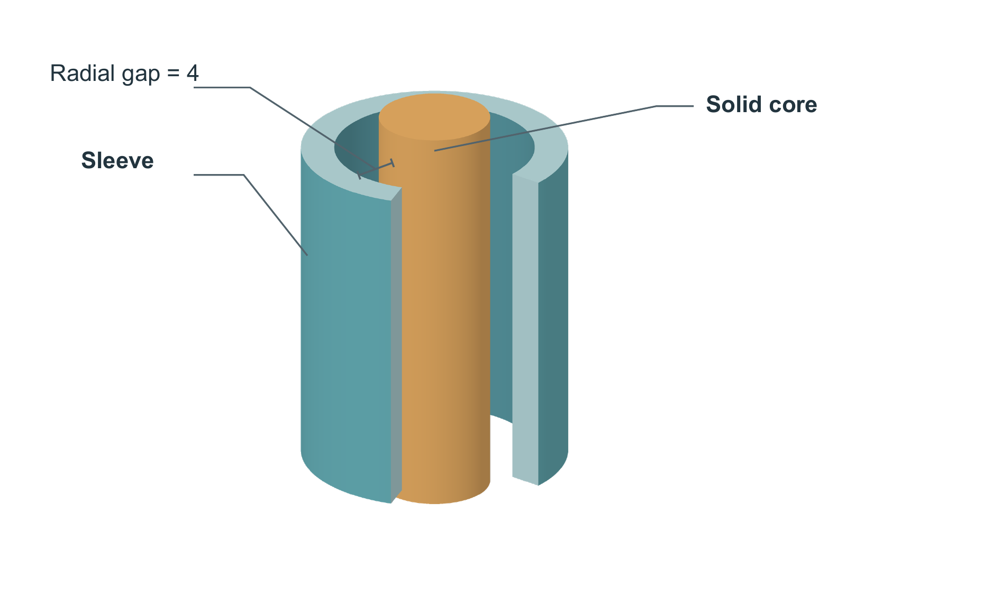

Only the ambiguous opening leader and its label were removed. Geometry, camera, light, palette and gap annotation are identical. Interpretation benefit remains for follow-up review.

SVG · PDF

SVG · PDF · Decision and tradeoff